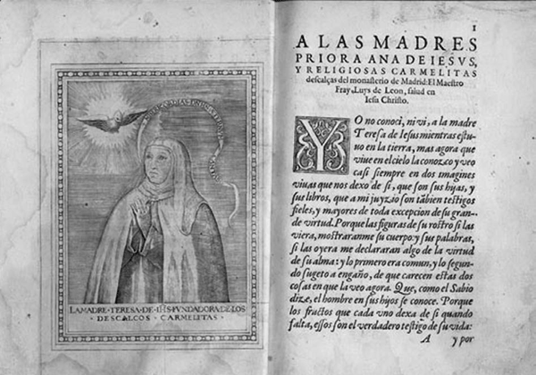

Carta de fray Luis de León a las carmelitas del monasterio de Madrid, 11 de septiembre de 1587, y aparecida en la primera edición de La vida de la madre Teresa de Jesús, y algunas de las mercedes que Dios le hizo, escritas por ella mesma por mandato de su confesor, a quiem lo embia y dirige y dize anzí. Salamanca, 1588
Confesó haber sido desde niña una criatura tocada por la gracia. Devota precoz, lectora de romanceros y libros de caballerías, padeció de una salud débil pero mostró siempre un espíritu vivaz que transmitió al estilo de sus obras en prosa. Ingresó en el convento de la Encarnación a los diecisiete años, vocación que nunca abandonó. En el proceso de su vía ascética y mística, se entregó a la constancia y obediencia del enlace espiritual como “Esposa de Cristo”. A pesar de la oposición, en 1562 inició la reforma de la nueva orden descalza carmelita para volver a la austeridad, la pobreza y la clausura y logró la fundación de varios conventos. Empezó a escribir por orden de sus confesores, redactando guías espirituales para las novicias y los discípulos descalzos, y testimonios de sus estados de arrobamiento, trance o éxtasis, recogidos en Libro de la vida, Conceptos del amor de Dios, Camino de perfección y, el más importante, Las Moradas o Castillo interior. Murió el 4 de octubre y de inmediato varios de sus miembros se volvieron reliquias. Al contar la célebre e insólita experiencia de la transverberación escribió: “Es un requiebro tan suave que pasa entre el alma y Dios, que suplico yo en su bondad lo dé a gustar a quien pensare que miento”.